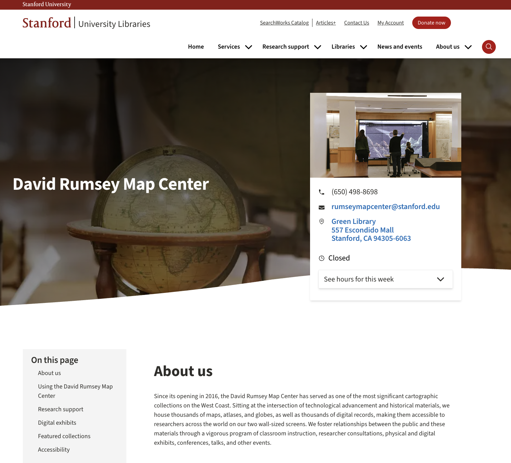
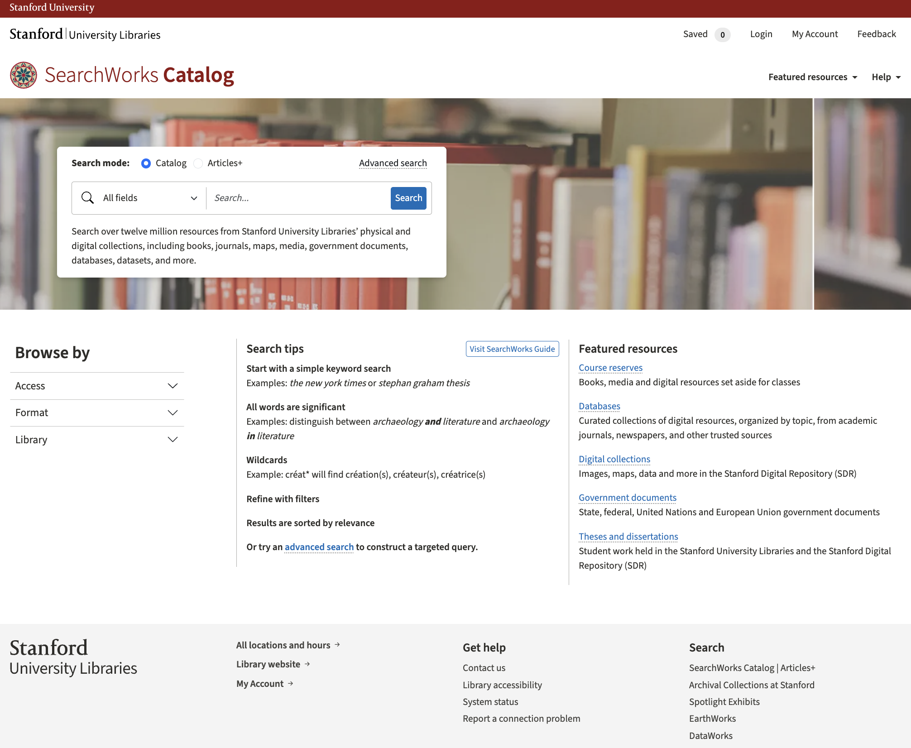
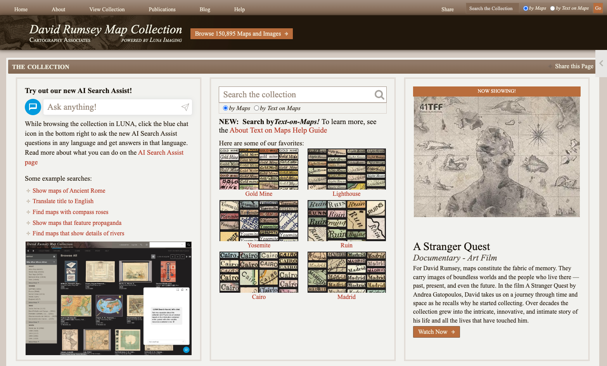

Evan Thornberry
Head Librarian and Curator


Every map is both a record of a place and an object of its time.
Our online catalogs are the best entry point for exploring.
Please get in touch. We're here for you.
Evan Thornberry evanthornberry@stanford.edu